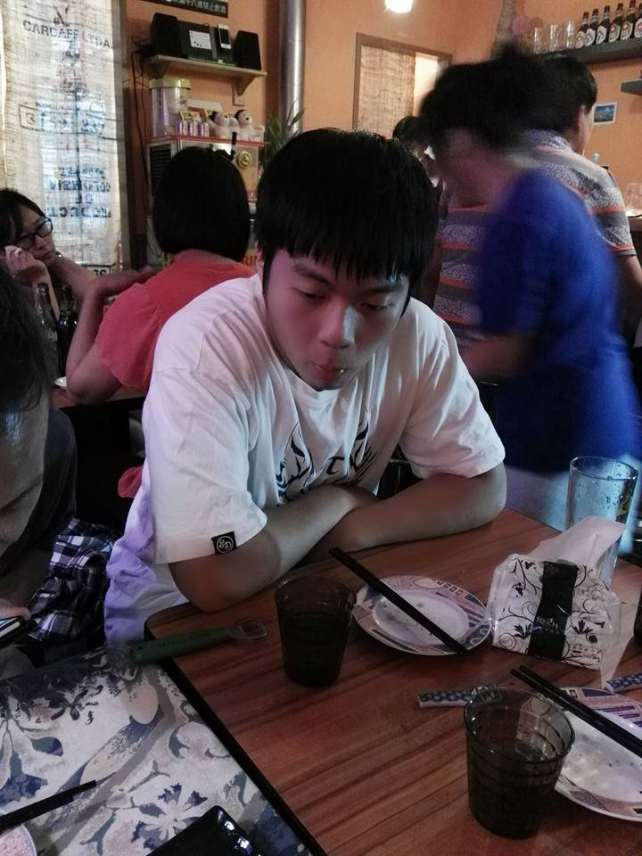
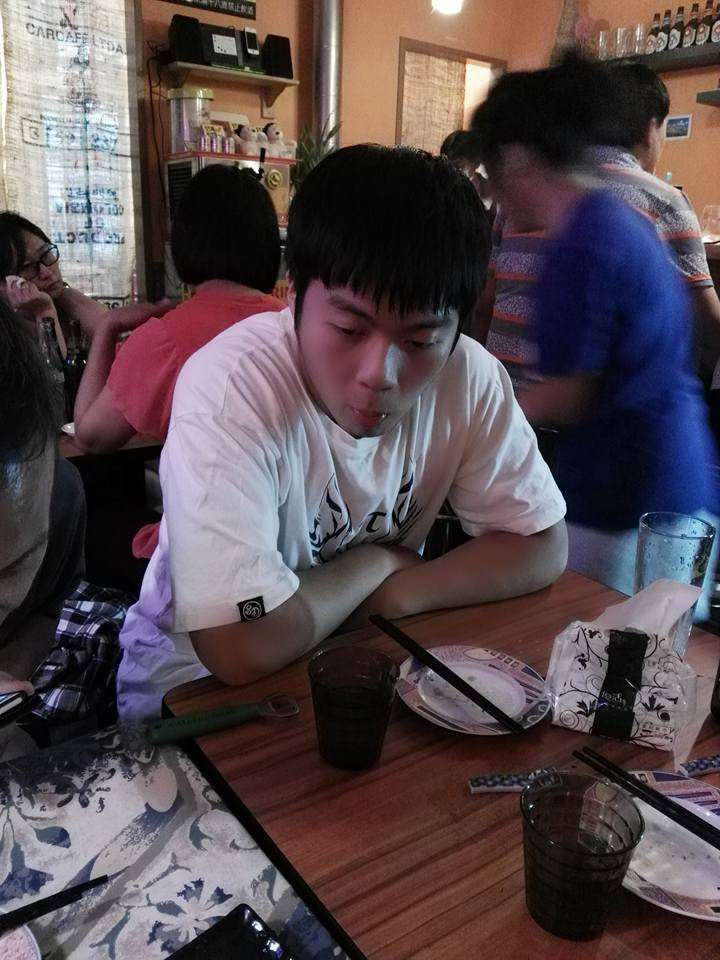

臺師大資訊研究社
105學年度上學期 迎新茶會
社團宗旨
官方版
資訊領域的發展日新月異，閉門造車是無法跟上發展的腳步，因此資訊研究社的宗旨就是提供一個讓所有對資訊有興趣的人可以互相交流學習，並找到志同道合朋友的地方，也讓那些對資訊領域有興趣，卻不得其門而入者可以有一個加入我們的方法。現實版
歡迎來到資研社泡茶聊天寫程式幹部介紹
社長組
黃熙傑(Jesse)

袁至誠
 寫過 PHP、Python
寫過 PHP、Python
但最強的語言可能是英文
超愛看電影跟打遊戲
寫過 PHP、Python但最強的語言可能是英文
超愛看電影跟打遊戲
總務組
吳映廷
擅長語言:會一點點的C, C++, Swift
不過不保證能解決你們的問題
興趣:喜歡動漫和遊戲，不嫌棄的話可以找我聊天
擅長語言:會一點點的C, C++, Swift
不過不保證能解決你們的問題
興趣:喜歡動漫和遊戲，不嫌棄的話可以找我聊天
教學組
林品儒(師大貓耳控)

文書組
速芷萱()
活動組
許如萲(筆名：Norza)
Coding資歷一年(つд⊂)
經驗：Flash遊戲/SFML遊戲/Unity3D遊戲
喜歡的遊戲：上古卷軸♡͙魔物獵人♡͙符文工廠etc.
興趣：電繪、ACG
Coding資歷一年(つд⊂)
經驗：Flash遊戲/SFML遊戲/Unity3D遊戲
喜歡的遊戲：上古卷軸♡͙魔物獵人♡͙符文工廠etc.
興趣：電繪、ACG
攝影組
楊諭文()
公關組
張嘉幃

擅長語言:不存在會一點點的OpensCAD
還有一點點的C Verilog VHDL PLC Arduino
以及各種端不上檯面的雜技
餵食記得不要有肉和蛋奶

擅長語言:
還有一點點的C Verilog VHDL PLC Arduino
以及各種端不上檯面的雜技
餵食記得不要有肉和蛋奶
上屆回顧
迎新擺攤

第一次迎新茶會

社課-Javascript

社課-HTML

主題式社課

校慶擺攤

第二次迎新茶會

講座 x 服務學習


SITCON 2016

擷取自:http://sitcon.org/2016
本學期活動
迎新
社課
講座
社員大會
課程介紹
社課安排
主要社課進階社課
主要社課
從初學者程度開始教起不用擔心程度不夠
使用Ruby為教學語言
Ruby
跨平台直譯式語言1995年日本人松本行弘公開
完全物件導向(?)
簡單易學
課程規劃
考試及考前一週不上社課(上半學期5堂課
下半學期5堂課
上半學期
9/30 基礎型別+四則運算10/7 字串處理+常用函式
10/14 雜湊+陣列
10/21 分支+邏輯運算子
10/28 社課 迴圈+迭代
下半學期
12/2 複習+函式 12/9 物件導向[+RegExp] 12/16 類別與實體 12/23 Mixin+繼承 12/30 函式庫使用11/4及1/6為考前開趴
雖然考前不上課也可以來讀書歐
進階社課
和主要社課不衝突講的內容不一定有相關
課程安排
資工系課程延伸當個黑黑
遊戲設計
內容未定...
求斗內
社費:200元
繳過的就就算斗內吧歡迎各位加入我們！
| FB粉絲頁 | FB社團 | 課程網頁 |

|

|

|